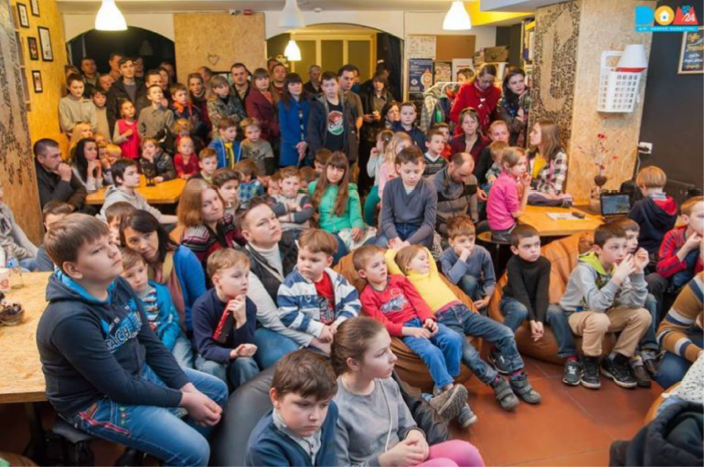

Історія.
Четвертого квітня виповнилося рівно 12 місяців з дня запуску Робоклубу в Івано-Франківську. Той день був сповнений ейфорії, сподівань і відчуття здійснення мрій для багатьох дітей і дорослих в нашому місті. І ці очікування справдилися, за рік роботи з роботами LEGO і волонтерами проекту познайомилися майже 600 дітей. 428 з них відвідували заняття з початкової робототехніки та основ візуального програмування за нашими власними програмами та програмою проекту CodeclubUA.
За умовами платформи по збору коштів проект мав тривати до липня 2016 року, але ми звісно не зважали на цю формальну дату і всіма силами працювали над розширенням матеріальної бази та напрацювання методичних матеріалів. І до цієї справи долучалися як приватні особи, так і інші організації, які стали нашими партнерами.
Після запуску проекту, на протязі року ще 14 доброчинців підтримали Робоклуб на трохи більше ніж 5000 грн. Ми стали регіональними координаторами проекту CodeClubUA і відкрили гурток з візуального програмування на базі Регіонального тренінгового центру, а також просуваємо цю програму на місцевому рівні. Також в березні ми приєдналися до великої міжнародної родини клубів з розвитку креативності та проектного мислення — Designe Squad Club Global і тепер проводимо заняття паралельно з нашими двома партнерськими клубами з США.
Ми дуже щасливі, що нам вдалося досягти так багато за такий короткий період часу і стати справжньою командою. За весь цей час, не зважаючи на великий обсяг прямої та підготовчої роботи команда збереглася в майже повному складі. Кожен з тих хто був з Робоклубом весь цей час, чесно і натхненно вкладав свій талант і сили в розвиток наших дітей та став невід’ємною частиною сім’ї робоклубівців.
Але кожного разу, коли курс чи майстер-клас підходив до свого логічного завершення кожен з нас все частіше замислювався — що ж далі?
Виклики.
Ці питання не сформувалося за один день і стали наслідком роздумів про ті виклики, з якими ми стикалися кожного дня.
- 1.Обмежена матеріальна база. В результаті фандрайзингової кампанії на Biggggidea.com за активної участі Івана Шихат-Саркісова і проекту Technic.in.ua нам вдалося зібрати кошти для закупівлі 9 наборів, з якими в один час могло займатися 18 дітей — 10 молодшої вікової категорії і 8 старшої — по дві дитини на один набір. Але для їх повноцінного використання треба було мати ще й по одній одиниці комп’ютерної техніки на кожний набір Lego. Ми намагалися вирішити цю проблему власними силами (виносячи всю портативну комп’ютерну техніку зі своїх осель) і звертаючись до деяких ІТ-компаній нашого міста. Також ми написали невеличкий грант на УВКБООН та ГО “КримСОС” і в його рамках отримали ще один набір для старших дітей, зарядні пристрої та виготовили друковані навчальні посібники, щоб зменшити залежність молодших груп від наявності комп’ютерної техніки на занятті. Але це була напівміра, тому, що після складання моделі діти повинні були чекати поки звільниться один з двох ноутбуків, що були на уроці для 10 дітей. Найбільшою та найактуальнішою проблемою всієї нашої комп’ютерної бази є і поки залишається те що вона є не новою, а вже була у використанні. І тому дуже часто потрапляє в ремонт, виснажуючи і без того маленький бюджет.
- 2.Відсутність постійної локації. Майже весь час наші людські та матеріальні ресурси були розпорошені по місту — заняття проводилися в трьох різних локаціях, а команда мала змогу збиратися тільки в четвертій. Цей виклик тільки підсилював попередній, бо переміщення ноутбуків між локаціями, навіть при неспівпадінні розкладів, перетворювався у справжній челендж з тайм-менеджменту. Останні пару місяців відразу після Нового Року були зовсім скрутні через постійну зміну обставин в доступних нам приміщеннях (переїзди партнерів, ремонти і таке інше)
- 3.Відсутність можливості для розвитку тих, хто цього потребує. До цього виклику ми справді не були готові. Нам здавалося, що запаливши і розвинувши певні компетенції в дитині хоча б на початковому етапі, вона разом з батьками знайдуть де в місті реалізувати цю потребу. І місцевий бізнес виправдав наші сподівання. До початку промокампанії і активного функціонування Робоклубу в місті на постійній основі функціонував тільки філіал однієї з всеукраїнських мереж клубів розвитку технічної творчості дітей. Після старту проекту в різний час в місті з’явилося 6 нових гуртків з робототехніки, як безкоштовних так і платних, як з LEGO так і з використанням інших навчальних робототехнічних наборів. Після старту проекту ми не продовжували промокоманії, але черга в Робоклуб станом на 1 березня складала більш ніж 200 дітей, деякі з них чекали майже рік. Станом на зараз вся черга ліквідована і всі перебував в ній і до кого ми змогли додзвонитися вже у нас займаються. Але майже кожного дня отримуємо по кілька звернень щодо продовження занять для випускників наших курсів від їх батьків, а також від нових бажаючих навчатися саме у нас.
- 4.Обмежений час у викладачів для волонтерства. Наші викладачі обожнюють Робоклуб і дітей, з якими займаються. Але вони живі люди, які мають свої родини та роботу, яка дозволяє заробляти на життя і мати ресурси та час для проведення занять з дітьми. Інколи робота викладачів має вплив на розклад занять, або й на саму можливість проведення таких занять. І час проведений в аудиторії з дітьми — це лише верхівка справжнього навантаження на викладача, бо часто етап підготовки до занять, особливо старших дітей, триває на кілька порядків більше ніж саме заняття.
Рішення.
Спираючись на отриманий за 12 місяців досвід робоклубівців та багаторічний досвід Івана і орієнтуючись на вирішення викликів, з якими ми стикнулися під час роботи, ми вирішили переробити концепт Робоклубу і зробити його відповідним до наших спроможностей та потреб наших маленьких робототехніків та програмістів.
Дуже знаковим для нас є те, що в цей момент ми з Іваном думали про одне й те саме — як зробити робоклубівський рух сталим за відсутності централізованої і постійної підтримки ззовні. В цей короткий проміжок часу відбувся обмін думками і рішення було знайдено.
На нашу спільну думку, єдиний можливий шлях подальшого розвитку проекту, ми бачимо у створенні соціальних підприємств на базі Робоклубів та паралельне функціонування проекту Technic.in.ua на базі громадської організації “Д.О.М.48.24”, що як і раніше буде допомагати створювати нові робоклуби за кошти меценатів і надходжень від робоклубів. Метою створення такої моделі є сталий розвиток доступної початкової технічної освіти в середніх та малих містах України для формування і розвитку спільноти мейкерів та програмістів, які в більшості таких міст відсутні.
Логічним рішенням стало те, що пілотним містом реалізації саме такої моделі стане Івано-Франківськ, як місто з високим потенціалом і сталою дружньою командою викладачів. Для реалізації проекту Іван Шихат-Саркісов приєднався до лав ГО “Д.О.М.48.24”, а я, як голова цієї громадської організації склав з себе повноваження оперативного управління і на найближчий рік концентруюся на розвитку тільки цього проекту. Робоклуб набув найвищий пріоритет для всієї нашої команди.
Ми орендували і відремонтували приміщення на першому поверсі в центральній частині міста, яке за допомогою наших партнерів з CodeClubUA, ІКЕАМанія Франківськ та власних ресурсів повністю укомплектували навчальним приладдям, меблями та комп’ютерною технікою. Дбаючи про інклюзивність та доступність, ми зібрали все в одній локації до якої зможуть потрапити навіть особливі діти. Все в цьому просторі зроблено з натхненням, для дітей і виключно руками команди Робоклубу.